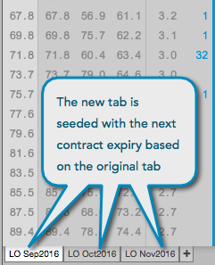

To a add a tab, click the + on the tab. When adding a tab in the Options Chain, the new tab is seeded with the next contract expiry.

Using the context menu, you can rename, remove, or copy a tab in the Options Chain.
To rename a tab:
To remove a tab, right-click the tab and select Remove tab from the context menu.
To copy a tab, right-click the tab to open the context menu and select Copy tab. The copied tab appears directly next to the original.